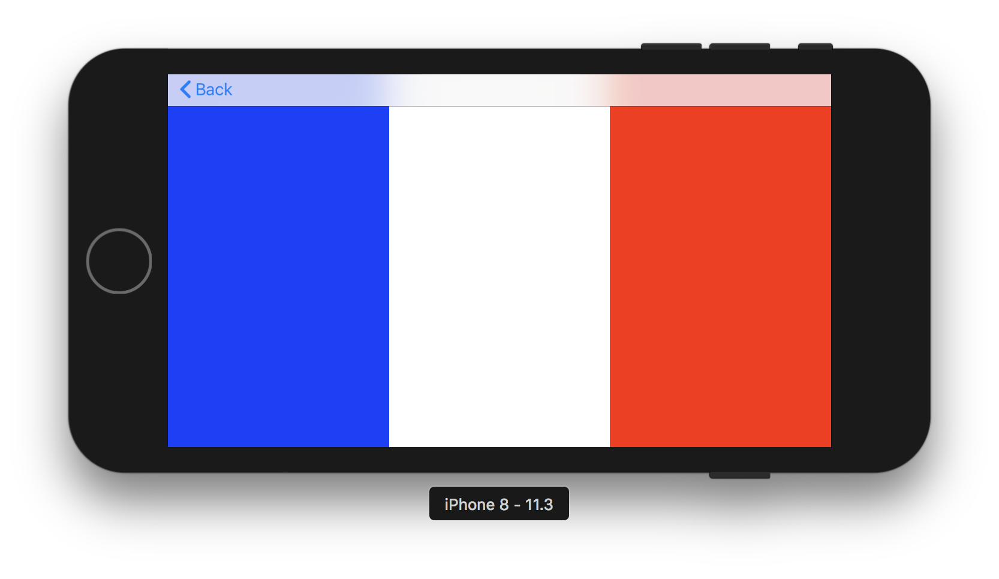

Design views for iOS
How to do use constraints to create views for multiple devices
Tools: XCode
Press 'Space' to continue
Press 'n' to show/hide notes
Press 's' for speaker mode
History
|
Date |
Notes |
|---|---|
|
2016-03-21 |
Added Changing Constraints chapter. |
|
2015-12-10 |
Added advanced recipes to the cookbook. Incorporated other minor updates. |
|
2015-09-16 |
Updated to include information about using Auto Layout with iOS size classes. Added many Auto Layout examples. |
|
2013-09-18 |
Updated to describe Auto Layout in Xcode 5. |
|
2012-09-19 |
Added to iOS Library. Added links to WWDC videos. |
|
2012-02-16 |
Corrected minor code error. |
|
2011-07-06 |
New document that describes the constraint-based system for laying out user interface elements. |
Before the constraints
Storyboard and were were kind of WYSIWYG.
...and comes the iPhone 5
- New screen size
- Introduction of relative Layout
Example 1 - no constraints - 1/3
- Create a new Swift project
- Do the same storyboard as in the screenshot
- Do NOT use constraints
Example 1 - no constraints - 2/3

Example 1 - no constraints - 3/3


Constraints - The basics 1/2
- All positions for the current view are relative to its superview or an other element in the same view hierarchy
- Generally, 4 constraints are needed
Constraints - The basics 2/2 - Storyboard
- Top, Leading (Left), Trailing (Right), Bottom
- Width, Height
Example 2 - Constraints - The basics 1/2
- Create a new entry in the menu
- Duplicate the Green View Controller and make it the destination of the new entry (push segue)
- Add constraints on the white view (fixed height)
Example 2 - Constraints - The basics 2/2
Constraints - More features
- Aspect Ratio
- Alignments
Example 3 - Play with constraints
Special graphical elements
Some graphical elements like UILabel or UIButton need only 2 constraints (width and height are optional) since they can determine their size with the elements (text) they have.
Hugging and compression resistance priority
Some constraints may be ambiguous. So we need to use hugging and compression resistance priority.
Hugging priority
- Original button: [ Click Me ]
- Hugging priority > 500: [Click Me]
- Hugging priority < 500: [ Click Me ]
Compression resistance priority
- Original button: [ Click Me ]
- Compression resistance priority > 500: [Click Me]
- Compression resistance priority < 500: [Cli..]
Play with ambiguous constraints
- Create a new entry in the menu
- Add to labels (Label1 and Label2) on the same line (without constraints)
- On Label1, set Top=0, Leading=0, Trailing=0 to Label2
- On Label2, set Top=0, Trailin=0
- Play with hugging and compression resistance
Responsive design
- Some constraint may be proportional (e.g. Equal width or height)
- You can link the constraints with Ctrl + Click + Drag to View (like you do when you map IBOutlets to source code)
- On the properties of the newly created constraint, you can change the multiplier
- Advice: use only fraction numbers in multiplier (instead of magic numbers)
Draw a french flag
Draw a french flag 2
Use aspect ratio on flag (3:2) and center it on the view. You can use Embed in function.
Dynamic constraints
- Each constraint can be mapped in code like IBOutlets
- To change the value of a constraint, change its constant attribute
- To change the priority of a constraint, be sure that the original constraint is not mandatory (priority 1000). There are 4 main steps of priority: 250-Low, 500-Medium, 750-High, 1000-Mandatory
Exercise: Dynamic constraints
Create a green view and put these constraints:
- iPhone: Top 8, Bottom 8, Leading 8, Trailing 8
- iPad: Top 8, Bottom 8, Leading 100, Trailing 100
- For leading constraint, change only the constraint value
- For trailing constraint, change constraint priority
Exercise: Dynamic constraints
Programmatic constraints
[NSLayoutConstraint constraintWithItem:view
attribute:NSLayoutAttributeLeading
relatedBy:NSLayoutRelationEqual
toItem:view.superview
attribute:NSLayoutAttributeLeading
multiplier:1.0 constant:8.0];
[NSLayoutConstraint
constraintsWithVisualFormat:@"H:|-15-[view]-15-|"
options:NSLayoutFormatAlignAllLeft
metrics:nil views:@{@"view":view}];
Last exercise: Scroll View
Embed in all the buttons in the menu view to a Scroll View and solve all the constraint errors.

Source Code: Click here
Github: benjdum59
Website: benjdum59.github.io
Mail: benjamin.dumont.pro@gmail.com
Go to Homepage